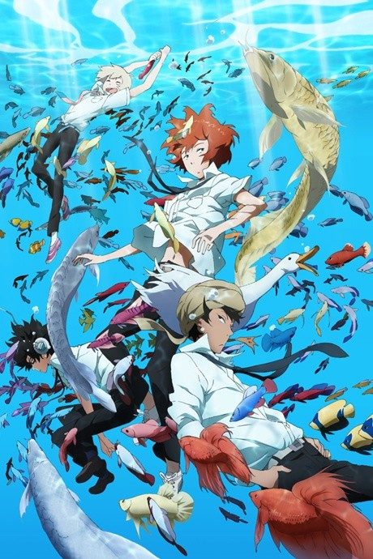

Anime2012 · Comedy, Sci-Fi, Slice of Life
Tsuritama
つり球
AniList7.3
Animeter—
Episodes12 ep
MangaOriginal
Is there a manga to continue?
StatusOriginal
An anime original, so there is no manga to pick up from.
Sources: AniList, MyAnimeList